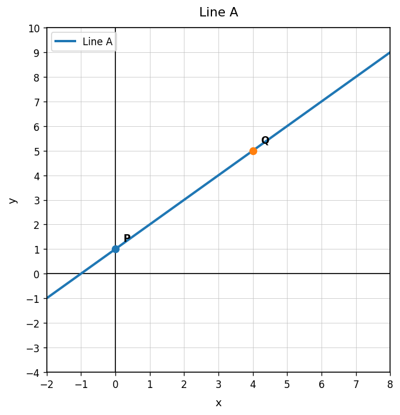
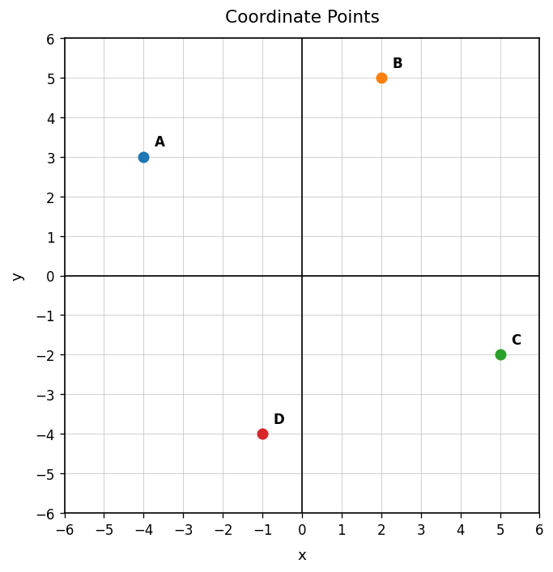
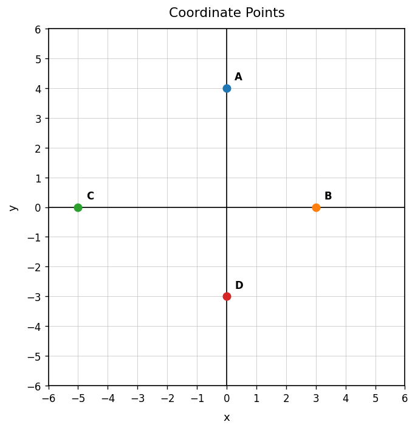

Practice Set 2.1.1
Use Line A. Choose two points on the graph and find the slope.

Find the rate of change from the table.
| $x$ | 0 | 1 | 2 | 3 |
|---|---|---|---|---|
| $y$ | 6 | 9 | 12 | 15 |
Find the slope between $(2,7)$ and $(6,19)$. Write one sentence explaining what the slope means as a change in $y$ for each 1-unit change in $x$.
A cyclist travels 36 miles in 3 hours at a constant speed. Find the rate of change and explain the meaning of the units.
Identify the representation type: graph, table, equation, or context.
$y=4x+7$
In the table, what output matches the input $x=3$?
| $x$ | 0 | 1 | 2 | 3 |
|---|---|---|---|---|
| $y$ | 2 | 6 | 10 | 14 |
Use the graph. What quantity is on the horizontal axis? What quantity is on the vertical axis?

A point on an earnings graph is $(4,44)$, where $x$ is hours and $y$ is dollars. Explain what the point means.
Determine whether the table matches the equation $y=3x+2$. Explain how you know.
| $x$ | 0 | 1 | 2 | 3 |
|---|---|---|---|---|
| $y$ | 2 | 5 | 8 | 11 |
A school dance costs $\$8$ per ticket plus a $\$20$ decoration fee. Write an equation for total cost $C$ in terms of tickets $t$.
A student says the graph below could match the table shown. Decide whether the student is correct and justify your reasoning.

| $x$ | 0 | 2 | 4 |
|---|---|---|---|
| $y$ | 2 | 8 | 14 |
Create a table, equation, and short context that all represent the same relationship. Then explain how someone could verify that all three match.
Use the coordinate plane. State the coordinates of points A and C.

Use the coordinate plane. Which labeled point lies on the $x$-axis? Which labeled point lies on the $y$-axis?

Plot the points $(1,2)$, $(2,4)$, $(3,6)$, and $(4,8)$ on a coordinate plane. Describe the pattern you see.
A point $(5,12)$ appears on a graph where $x$ is time in minutes and $y$ is distance in blocks. Interpret the point in context.